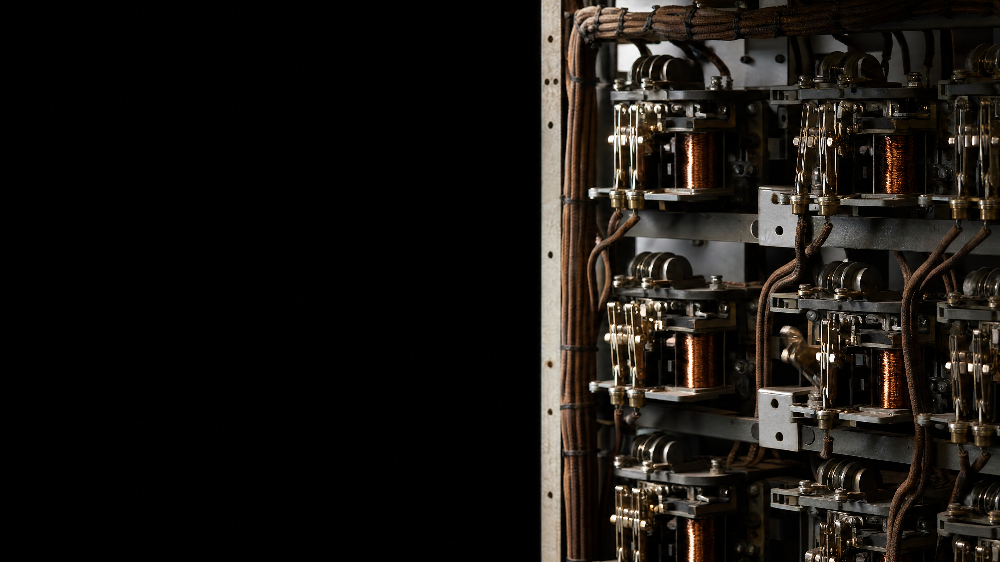

three things a computer does with bits
store them
move them
change them by rules

| subtract | = | add the negative | the negative: flip every bit, then add one |
| multiply | = | add again and again | × 2 is a shift to the left |
| compare | = | subtract, look at the sign | |
| divide | = | subtract again and again |
| darker | new = old − 40 |
| negative | new = 255 − old |
| black & white | new = old ≥ 128 ? 255 : 0 |
| blend two photos | new = (a + b) ÷ 2 |
| blur | nine pixels at a time |